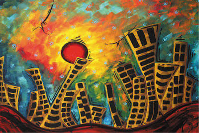
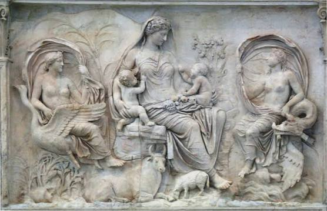
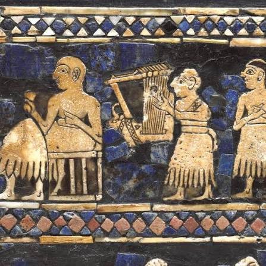
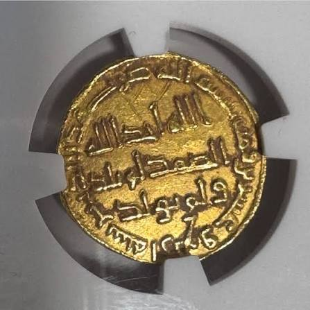

استكشف الفن والتاريخ في مكان واحد
مرحباً بك في متحف السلالات الكبرى. نقدم لك مجموعات استثنائية من الفن الكلاسيكي والمعاصر والقطع الأثرية الفريدة.
أبرز شخصيات عرفها التاريخ
تصفح أبرز الشخصيات المؤثرة عبر العصور
-
 الإمام علي بن أبي طالب رابع الخلفاء الراشدين، وأعظم القادة والحكماء.
الإمام علي بن أبي طالب رابع الخلفاء الراشدين، وأعظم القادة والحكماء. -
 الملك حمورابي سادس ملوك بابل، صاحب أشهر شريعة قوانين في التاريخ.
الملك حمورابي سادس ملوك بابل، صاحب أشهر شريعة قوانين في التاريخ. -
.jpeg) الملك جلجامش ملك أوروك السومري، وبطل أقدم ملحمة أدبية.
الملك جلجامش ملك أوروك السومري، وبطل أقدم ملحمة أدبية. -
.jpeg) نبوخذ نصر الثاني أعظم ملوك الإمبراطورية البابلية الثانية وباني الجنائزية المعلقة.
نبوخذ نصر الثاني أعظم ملوك الإمبراطورية البابلية الثانية وباني الجنائزية المعلقة. -
.jpeg) الحسن بن الهيثم عالم موسوعي عربي وأب البصريات الحديثة.
الحسن بن الهيثم عالم موسوعي عربي وأب البصريات الحديثة. -
.jpeg) الملك نمرود ملك الإمبراطورية البابلية الثانية، مشهور بحكمه العادل.
الملك نمرود ملك الإمبراطورية البابلية الثانية، مشهور بحكمه العادل. -
.jpeg) ابن سينا طبيب وفيلسوف إسلامي، لُقب بأمير الأطباء.
ابن سينا طبيب وفيلسوف إسلامي، لُقب بأمير الأطباء. -
.jpeg) صلاح الدين الأيوبي قائد إسلامي عظيم ومؤسس الدولة الأيوبية.
صلاح الدين الأيوبي قائد إسلامي عظيم ومؤسس الدولة الأيوبية.
المعارض الحالية
ثلاث قاعات تجمع الفن الكلاسيكي والمعاصر والنحت. اختر قاعة لتعرف المزيد.
.jpeg)
قاعة الفن الكلاسيكي
مجموعة مميزة من الأعمال الكلاسيكية الخالدة عبر العصور، تحتوي هذه القاعة على 20 لوحة فنية أصلية تعود لأبرز فناني التاريخ.
دخول القاعة
قاعة الفن المعاصر
استكشف أحدث الأعمال واللوحات الفنية الحديثة والمعاصرة التي تم اختيارها بعناية لضم 20 عملاً فنياً استثنائياً.
دخول القاعة
قاعة المنحوتات التاريخية
منحوتات وقطع أثرية تجسد الإبداع في نحت الحجر والمعدن، وتضم القاعة 20 تحفة نحتية نادرة.
دخول القاعةعصور وكنوز الحضارات
انقر على أي عصر تاريخي لقراءة الشرح المفصل عنه في المتصفح
المجموعات الأثرية
معرض الكنوز المحفوظة
-

قيثارة أور الذهبية
الحضارة السومرية
-
.jpeg)
خوذة مسكالمدغ الذهبية
السلالة السومرية
-
.jpeg)
كنز نمرود الذهبي
الإمبراطورية الآشورية
-
.jpeg)
الثور المجنح (لاماسو)
الحضارة الآشورية
-
.jpeg)
تمثال الكاتب السومري
العصر السومري
-
.jpeg) alt="فتاة الوركاء">
alt="فتاة الوركاء">
قناع أوروك (فتاة الوركاء)
حضارة الوركاء
-
.jpeg)
مسلة حمورابي
الحضارة البابلية
-
.jpeg)
تمثال أسد بابل
الحضارة البابلية
-
.jpeg)
إناء الوركاء السومري
عصر الوركاء
عنوان الكنز
الشرح والنبذة الفنية والتاريخية...
الأرشيف الوطني الموحد
سجل المقتنيات الشامل
جدول بيانات منظم يتيح التصفية المتقدمة واستعراض معلومات المادة والحالة
| رمز القطعة | المعاينة | الاسم والحقبة | المادة والمصدر | حالة العرض | الإجراءات |
|---|---|---|---|---|---|
| IRQ-SUM-001 |

|
قيثارة أور الذهبية الحضارة السومرية (2500 ق.م) |
ذهب، لازورد، خشب المقابر الملكية في أور |
معروضة بالقاعة | |
| IRQ-SUM-002 |
|
خوذة الملك مسكالمدغ السلالة السومرية الأولى (2600 ق.م) |
ذهب خالص (سبائك مصقولة) أور - ذي قار |
معروضة بالقاعة | |
| IRQ-ASY-003 |
.jpeg)
|
الثور المجنح (لاماسو) الحضارة الآشورية (721 ق.م) |
حجر الجبس والألباستر خورسباد / نينوى |
معروضة بالقاعة | |
| IRQ-BAB-004 |
|
مسلة شريعة حمورابي الإمبراطورية البابلية القديمة (1750 ق.م) |
حجر البازلت الأسود مدينة بابل الأثرية |
نسخة طبق الأصل | |
| IRQ-ASY-005 |
.jpeg)
|
مجوهرات كنز نمرود الآشورية الحديثة (القرن 8 ق.م) |
ذهب، مرجان، عقيق، لازورد المقابر الملكية بالنمروذ |
في المخزن المحصن | |
| IRQ-SUM-006 |
.jpeg)
|
قناع أوروك (فتاة الوركاء) عصر الوركاء (3100 ق.م) |
رخام مرخمي أبيض مدينة الوركاء الأثرية |
معروضة بالقاعة | |
| IRQ-SUM-007 |
|
تمثال إيبيه إيل (الكاتب السومري) السومري المبكر (2400 ق.م) |
ألباستر، لازورد، صدف مملكة ماري القديمة |
معروضة بالقاعة | |
| IRQ-ISL-008 |
 |
الدينار العباسي الذهبي العصر العباسي (786 م - عهد هارون الرشيد) |
ذهب خالص 22 قيراط دار السكة - بغداد السلام |
معروضة بالقاعة | |
| IRQ-SUM-009 |
.jpeg)
|
إناء الوركاء النحتي حقبة أوروك السومرية (3200 ق.م) |
مرمر أبيض حليبي الوركاء - المثنى |
معروضة بالقاعة | |
| IRQ-BAB-010 |
.jpeg)
|
تمثال أسد بابل البازلتي البابلية الحديثة (605 - 562 ق.م) |
حجر البازلت الصلب قصر نبوخذ نصر - بابل |
معروض بالموقع الأثري |
عن المتحف
تأسس متحف ليكون منارة ثقافية تجمع بين عراقة الماضي وإبداع الحاضر. نسعى دائماً لتوفير بيئة ملهمة للزوار من مختلف أنحاء العالم عبر تنظيم المعارض وتطوير الفنون البصرية والرقمية.